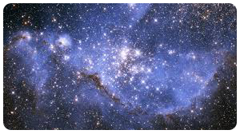

Bir Varoluş Enerjisi: "GÜNEŞ SİSTEMİ"
Güneş sistemi; gezegenler, uydular, asteroitler, kuyruklu yıldızlar, ve meteorlar dahil olmak üzere Güneş ve yörüngesinde dolaşan her şeyden oluşmaktadır. Güneş sistemi; Antik Romalıların Sol adını verdikleri Güneş’ten başlayıp, dört "iç gezegeni" geçip, Asteroit Kuşağı boyunca uzanıp, dört gaz devine gider ve oradan da disk şekilli Kuiper Kuşağı üzerinden, gözyaşına benzeyen "heliopause" alanının çok ötesine kadar uzanır. Bilim insanları Güneş Sistemi’nin sınırlarının, Güneş’ten yaklaşık olarak 15 milyar kilometre uzaklıkta olduğunu tahmin ediyorlar. Helipause’un ötesinde de Güneş Sistemi’ni çevreleyen dev küresel Oort bulutu vardır.
Güneş Sistemi'nin Keşfi
Bin yıl boyunca, gökbilimciler yıldızlar arasında hareket ediyor gibi görünen ışık noktalarını takip ettiler. Antik Yunanlar onlara "gezici" anlamına gelen gezegenler adını verdiler. Merkür, Venüs, Mars, Jüpiter ve Satürn Antik Çağ’da biliniyorlardı. Teleskobun icadı Asteroit kuşağı, Uranüs, Neptün, Plüton ve bunların çoğunun uydularını da bilinenlere kattı. Uzay Çağı’nın doğuşu ile uzaya sistemimizi keşfetmek üzere düzinelerce insansız uzay roketi fırlatıldı. Bu macera hala devam etmekte. Şimdiye kadar ise yalnızca bir uzay aracı, “Voyager 1” yıldızlararası uzay eşiğini geçebildi.
Eris’in keşfi, kısa sürede yeni cüce gezegenlerin keşfini başlattı ve en sonunda da Uluslararası Astronomi Birliği’nin "gezegen" kavramını gözden geçirmesine yol açtı. Bu gözden geçirme sonucunda, 2006 yılında Plüton’un statüsü gezegenden cüce gezegene değiştirildi. Bu karar halen tartışmalı durumda... Özellikle de New Horizons görevinin 2015 yılında Plüto’nun yüzeyinde muazzam bir jeolojik çeşitlilik bulmasından sonra... Gökbilimciler, 20 Ocak 2016 tarihinde varlığının kanıtlanmasından itibaren Güneş Sistemi’nde başka bir gezegeni, hakiki bir 9. Gezegeni araştırıyorlar. Bilim insanlarının deyişi ile 9. Gezegen, Dünya’nın kütlesinin 10 katı, Plüton’nun kütlesinin ise 5.000 katı kadar.
Güneş Sistemi'nin Oluşumu
Birçok bilim insanı Güneş Sistemi’nin Solar Nebula olarak bilinen dev, dönen bir gaz ve toz bulutundan oluştuğunu düşünüyorlar. Nebula yerçekimi yüzünden çökünce daha hızlı döndü ve bir disk şeklinde düzleşti. Materyallerin çoğu Güneş’i oluşturmak için merkeze doğru çekildi. Diskin içindeki diğer parçacıklar çarpıştı ve bazıları planetasimal denilen asteroit boyutlu nesneleri oluşturmak için, bazıları ise asteroitleri, kuyruklu yıldızları, uyduları ve gezegenleri oluşturmak için bir araya geldiler. Güneş’ten gelen güneş rüzgarı o kadar kuvvetliydi ki hidrojen ve helyum gibi daha hafif elementlerin çoğunu en içteki gezegenlerden süpürdü ve geriye çoğunlukla küçük, kayalık gezegenler bıraktı. Güneş rüzgarı dış bölgelerde çok daha zayıftı, bunun sonucunda gaz devleri çoğunlukla hidrojen ve helyumdan oluştu.
Güneş NEDİR
Güneş, Güneş Sistemi’nin kütlesinin %99.8’ini içermesiyle sistemdeki açık ara farkla en büyük cisimdir. Dünya’da ve muhtemelen başka yerlerde yaşamı mümkün kılan ısı ve ışığın çoğunu Güneş yayar. Gezegenler, Güneş’in her elipste merkezden hafif kaymış olmasıyla birlikte, Güneş’in etrafında oval yapılı elips adı verilen yörüngelerde dönerler.
İç Güneş Sistemi'nde Neler Var?
İç Güneş Sistemi'ni oluşturan dört iç gezegen (Merkür, Venüs, Dünya, Mars), çoğunlukla demir ve kayalardan oluşmuşlardır. Benzer büyüklükleri ve bileşimleri sebebiyle Dünya benzeri gezegenler olarak bilinirler. Dünya’nın bir tane doğal uydusu (Ay) vardır. Mars’ın ise Deimos ve Phobos isimli iki uydusu vardır. Mars ve Jüpiter arasında ise Asteroit Kuşağı bulunur. Asteroit, "küçük gezegen" anlamına gelir. Bilim insanları bunların 750.000’den fazla ve 1 milin beşte üçünden daha büyük çapları olduğunu, aynı zamanda da milyonlarca küçük asteroit olduğunu tahmin ediyorlar. Çapı yaklaşık olarak 590 mil (950 km) olan cüce gezegen Ceres de buradadır. Birkaç asteroitin yörüngesi, onları Güneş Sistemi’ne yaklaştıran biçimdedir ve bu nedenle bazen Dünya'ya veya diğer iç gezegenlere çarpabilirler. Dünya küçük filolar ve uzay araçları tarafından çevrelenmiştir aynı zamanda Mars da birçok uzay aracı tarafından ziyaret edilmiştir. Önde gelen Mars görevlerinden bazıları şunlardır: Curiosity, Opportunity Spirit, Mars Reconnaissance Orbiter (yörüngeden yüksek çözünürlüklü fotoğraflar alır) ve Viking. Venüs ise onyıllar boyunca Amerika, Avrupa ve Sovyet uzay araçları tarafından araştırıldı. Merkür birkaç alçak uçuş ve iki tane uzun süreli göreve ev sahipliği yaptı: MESSENGER (tamamlandı) ve BepiColombo (2018 yılında fırlatıldı ve 2025 yılında yörüngeye ulaşması bekleniyor).
Dış Güneş Sistemi'nde Neler Var?
Dış Güneş Sistemi'ni oluşturan gezegenler olan Jüpiter, Satürn, Uranüs ve Neptün, kalın gaz katmanları olan dev gezegenlerdir. Bu gezegenler arasında kayalıklı, buzlu hatta volkanik (Jüpiter’in İo’su) olmak üzere çeşitli bileşimlere sahip düzinelerce uydular vardır. Neredeyse tüm bu gezegenlerin kütlesi hidrojen ve helyumdan oluşmuştur, bu da onlara güneşe benzeyen bileşimler verir. O kalın katmanlarının altında ise katı bir yüzey yoktur. Atmosferlerinden gelen basınç kayalık çekirdeğe sahip olmalarına rağmen, iç kısımlarını sıvılaştırır. Tüm bu devleri toz, kaya, ve buz çemberleri çevreler, ki bu da Satürn'ü de meşhur eden özelliğidir. Kuyruklu yıldızlar çoğunlukla buz ve kaya içeren kirli kar topları olarak bilinirler. Bir kuyruklu yıldızın yörüngesi onu Güneş’e yakınlaştırdığında, merkezi çekirdeğindeki buzun bir kısmı, Güneş tarafından ısıtılarak gaza dönüşür ve Güneş rüzgarı da bu gazı uzun bir kuyruğa dünüştürür. Yörüngelerini 200 yıldan kısa bir sürede tamamlayan kısa periyotlu kuyruklu yıldızların disk şeklindeki Kuiper Kuşağı'ndan köken aldığı, yörüngelerini tamamlamaları 200 yıldan fazla süren uzun periyotlu kuyruklu yıldızların ise küresel şekildeki Oort Bulutu'ndan köken aldıkları düşünülmektedir. Jüpiter ve Satürn birkaç uzay aracı tarafından ziyaret edildiler. Jüpiter, June ve Galileo; Satürn ise Cassini olmak üzere uzun süreli görevlere de ev sahipliği yaptılar. Ancak Uranüs ve Neptün sadece 1980 yılında Voyager 2 isimli bir uzay aracının alçak uçuşu sırasında görülebildiler. Bazı bilim insanları 2030’larda yollanmak üzere bir Uranüs ya da Neptün mekiği üzerine çalışıyorlar. Bilim insanları aynı zamanda gaz devlerindeki iklim değişikliklerini ve bulut oluşumlarını takip etmek amacıyla yeryüzünde de gözlemler yapıyorlar.
9. GEZEGEN VAR MI?
Bilim insanları uzun bir süre boyunca Kuiper Kuşağı olarak bilinen buzlu bir materyal şeridinin Neptün’ün yörüngesinin ilerisinde de var olduğundan ve Dünya ile Güneş arası uzaklığın 30-55 katı kadar genişlediğinden şüpheleniyorlardı. Uzmanlar, 20. yüzyılın son on yılından bugüne kadar bahsedilen bu cisimlerden 1000’den fazla buldular. Araştırmacılar, Kuiper Kuşağı’nın yüzbinlerce yıldır muhtemelen 100 kilometre genişlikteki buzlu cisimlere ve bir trilyondan fazla kuyruklu yıldıza ev sahipliği yaptığını tahmin ediyorlar. Plüton, şu anda cüce gezegen olarak kabul ediliyor. Bu cüce gezegen, Kuiper Kuşağı’nda yer alıyor; ama orada yalnız değildir. Son araştırmalar Makemake, Haumea ve Eris gibi gök cisimlerini de Kuiper Kuşağı’na dahil etmiştir. Diğer bir Kuiper Kuşağı cismi ise büyük ihtimalle bir cüce gezegen olacak kadar büyük olan fakat henüz bu şekilde sınıflandırılmamış olan Quaoar’dır. Plüton’un 3-4 katı olan Sedna, Oort Bulutu’nda keşfedilen ilk cüce gezegendir. NASA’nın New Horizons görevi 14 Temmuz 2015’te tarihin ilk Plüto alçak uçuşunu gerçekleştirdi ve Kuiper Kuşağı’nı keşfetmeye hala devam etmektedir. New Horizons, 1 Ocak 2019 tarihinde 2014 MU69 cisminin yanından geçmiştir.
9. Gezegen, eğer var ise, Güneş’in etrafında, Neptün’ün yörüngesinin 20 kat daha uzağından dönüyor.(Neptün’ün yörüngesi Güneş’e en yakın noktasında, Güneş’ten 4.3 milyar kilometre uzaklıktadır.) Tuhaf gezegenin yörüngesi Dünya’nın Güneş’ten uzaklığının 600 katı kadar uzaklıktadır. Bilim insanları aslında 9. Gezegeni doğrudan görmediler ve bazı gökbilimciler, Kuiper Kuşağı’ndaki diğer cisimler üzerindeki yerçekimi etkileri ile ortaya çıkan varlığını tartışıyorlar. Kuiper Kuşağı sonrasında ise Güneş Sistemi’nin en uç noktası olan heliosfer, Güneş tarafından verilen elektrik yüklü parçacıklar içeren geniş gözyaşı şeklindeki uzay alanıdır. Birçok gökbilimci helipause olarak bilinen heliosferin limitinin Güneş’ten 15 milyar kilometre uzakta olduğunu düşünüyorlar. Oort Bulutu, Kuiper Kuşağı’nın çok ötesindedir ve teorik olarak 5-100.000 astronomik birim (AU) kadar uzanır. 1 AU, Güneş ve Dünya arasındaki mesafeye eşittir; yani yaklaşık olarak 150 milyon kilometredir. Ve NASA’ya göre Oort Bulutu, yaklaşık olarak 2 trilyon adet buzlu cisme ev sahipliği yapar.
Gökyüzünün Parlayan Sırları: "YILDIZLAR"
Geceleri gökyüzüne baktığımızda gördüğümüz o ışıklı noktacıklar; yıldızlar… Kimilerine göre küçükken resim defterlerimizi süslediğimiz beş sivri köşeli nesne, kimilerine göre ise bu alemdeki varlığımızı anlamaya giden yolu aydınlatan göğe serpilmiş inci taneleri… Yıldızlara varoluşsal anlamda değer verebilmek ve onların doğasını anlayabilmek için öncelikle model yıldızımız Güneş’i tanıyabilmemiz gerekir. Güneş bir yıldızdır ve onu gece gökyüzünde gördüğümüz yıldızlardan ayıran şey Dünya’ya en yakın yıldız olmasıdır. Yakınlıktan kastınız nedir derseniz eğer, yaklaşık olarak 150 milyon km’dir. Bu sayı size yeterince büyük gelebilir ama emin olun ki diğer yıldızlar artık km’lerle ifade edilemeyecek kadar uzak olduğundan ışık yılı ile ifade edilir. Işık yılı, ışığın bir yılda aldığı yoldur ve bu mesafe yaklaşık olarak 10 trilyon km’dir. Yıldız, ağırlıklı olarak hidrojen ve helyumdan oluşan, yoğun ve karanlık uzayda ışık saçan bir plazma küresidir. Bir araya toplanan yıldızlarevrendeki gökadaları oluşturur. Dünya’ya en yakın yıldız olan Güneş’in yüzey sıcaklığı yaklaşık 6000°C, merkezindeki sıcaklık ise yaklaşık 10 milyon °C’dir. Gökbilimciler bir yıldızın tayfını, parlaklığını ve uzaydaki hareketini gözlemleyerek o yıldızın kütlesi, yaşı, kimyasal bileşimi gibi özelliklerini belirleyebilir. Yıldızların hemen hemen tüm özelliklerini başlangıçtaki kütlesi belirler. Bu özelliklerin arasında parlaklık, büyüklük, yıldızın gelişimi, yaşam süresi ve kaçınılmaz sonu da bulunur.
YILDIZLARIN OLUŞUMU
Uzayda, gaz ve toz gibi maddeler oldukça fazla bulunuyor. Bu gaz molekülleri, aralarındaki çekim gücünün etkisiyle bir araya toplanmaya başlayıp daha sonra ise sürekli sıkışmaya başlarlar. Gazlar sürekli sıkıştıkça, kendi kütle çekimsel kuvveti altında çökmeye başlar ve gaz bulutu çöktükçe, Bart damlacığı adı verilen yoğun toz ve gazdan oluşan ayrık kümelenmeler oluşur. Ardından bu çekimsel kuvvet ısıya dönüşür ve büyük bir enerji açığa çıkar. Ortaya çıkan bu büyük ısı, hidrojenlerin birleşerek helyuma dönüşmesine neden olan nükleer reaksiyonların başlamasına neden olur. Bu nükleer reaksiyonlar basıncı sabit tutarak büzülmeyi durdurur ve tam merkezdeki dev gaz topu kararlı hale gelerek yıldızı oluşturur. Yıldız ne kadar büyükse yaşam süresi de o kadar kısadır. Büyük yıldızların çekirdeklerinde daha büyük olan basınç, hidrojenin daha hızlı tükenmesine neden olur. En büyük yıldızlar ortalama bir milyon yıl yaşarken kütlesi en düşük olan kırmızı cüceler yakıtlarını çok yavaş tüketir ve on milyar ile yüz milyar yıl arasında yaşarlar.
Doğum Başlıyor...
Uzayın derinliklerine sayılamayacak kadar çok sarmal galaksi saçılmıştır. Güneş, Samanyolu galaksisinin kenarına yakındır ve iki sarmal kol arasında yer alır. Bu sarmal kollar galaksinin çekirdeği etrafında dönerken yıldızlararası bulutları sıkıştıran şok dalgaları meydana getirirler (Şok dalgalarını şöyle tarif edebiliriz: Hareketli ses kaynağının hızı, sesin yayılma hızını geçince, ses, patlama sesi olarak duyulur. Bu durumda dalga ışın gibi konik bir alana yayılır ve bu olay şok dalgaları olarak isimlendirilir). Şok dalgalarının meydana getirdiği sıkıştırma, yeni yıldızların doğum sürecini başlatır. Galaksinin sarmal kollarından biri yıldızlararası bulutun içinden geçerken birbirinden çok uzak olan atomlar birdenbire sıkışırlar. Eskiden şeffaf olan bulut bu nedenle saydamlığını yitirir. Zayıf yıldız ışığı, artık bulutun içine giremez. Böylece bulut, bir “karanlık bulutsu”ya dönüşür. Astronomlar için karanlık bulutsuları bulmak oldukça zordur. Ancak arkalarında parlak bir yıldız grubu varsa karanlık siluetler biçiminde görünürler. Bulutsu, saydam olmadığından uzak yıldızların ışıkları bulutun içlerine giremez ve içindeki gazları ısıtamaz. Sıcaklık yavaş yavaş mutlak soğuğa (-273°C) doğru düşer. Sıcaklık düşerken atomların hareketleri de gittikçe yavaşlar ve atomlar arasındaki zayıf çekim kuvveti bulutsunun içyapısına egemen olmaya başlar. Karanlık bulutsu çok düzgün ve homojen değildir. Yani bulutsunun farklı bölgelerinde ortalama sayının üzerinde ya da altında atomlar bulunur.
Yıldızların Doğum Yerleri: Galaksiler
Evren; en küçük atom altı parçacıktan, bilinen en büyük yapı olan galaktik süperkümelere kadar var olan her şeyi içine almaktadır. Astronomlar evrenin, her biri ortalama 100 milyar yıldızdan oluşan yaklaşık 100 milyar galaksi içerdiğini tahmin etmektedirler. Galaksiler çok sayıda yıldız, bulutsu (içinde yıldızların doğduğu toz ve gaz bulutları) ve yıldızlararası maddeden oluşur. En büyük galaksiler 3 trilyon kadar yıldız içerirken en küçükleri yaklaşık yüz bin yıldız içerir. Galaksi çekirdeklerinin kuasarlar olduğu düşünülmekle birlikte, çok uzakta olduklarından gerçek doğaları halen tam anlaşılamamıştır. İçinde bulunduğumuz Samanyolu Galaksisi’ni çevreleyen dev bir yıldızlararası gaz ve toz bulutu mevcuttur. Galaksinin çevresine dağılmış diğer birçoğu gibi bu yıldızlararası da aşırı miktarda madde içerir. Bu bulut, Güneş’e benzeyen yüzlerce yıldız oluşturabilecek kadar maddeye sahiptir. Bu ince bulutta rastlanılan atomların çoğunluğu, evrende en bol bulunan element olan ‘hidrojen’dir. Her 16 hidrojen atomuna karşılık 1 tane de evrendeki ikinci bol element olan ‘helyum’ atomu bulunur. Uzayda daha ağır olan karbon azot, oksijen ve demir gibi elementlere de uzun araştırmalar sonucunda rastlanılmıştır. Samanyolu’nu çevreleyen gaz ve toz bulutu soğuktur. Mutlak sıfırın sadece 100 derece üzerinde (yaklaşık -173°C) olan bu sıcaklıkta atomlar çok yavaş hareket ederler ve hemen hiç çarpışmazlar. Yıldızı doğuracak olan kozmik rahim, işte böyle bir yerdir. Böyle bir bulut, galaksinin sarmal kollarından birine yaklaşmak için milyonlarca yıl bekler. üzerinde ya da altında atomlar bulunur.
TAKIMYILDIZLARI
İlk uygarlıklardan günümüze kadar gökyüzünü gözlemleyen insanlar, yıldızları daha kolay bir şekilde işaretlemek için yıldızları, gökyüzünde çizdikleri şekillere göre bir araya getirmeyi düşündüler. Böylece, mitolojik kahramanlar, hayvanlar veya nesnelerle özdeşleştirilmiş takımyıldızlar doğdu. Carl Sagan’ın düşlediği gibi insanlar bir süre sonra bu yıldızlarda kendi tanrılarını ya da mitolojik varlıklarını gördüler. Günümüzde de, bütün bu kültürlerin bir karışımını kullanıyoruz. Kimi takımyıldızlarını Sümer yada Çin astronomisinden alırken kimi yıldız isimlerini İslam astronomisinden almışız. Örneğin bugün çıplak gözle gözlemlenebilen yıldızların birçoğunun isminin Arapça’dan geldiğini biliyoruz. Yani yıldızların isimlendirilmesinde insanlar Arap öncüllerden fazlaca faydalandı. Öte yandan takımyıldızların çoğunun Yunanlar ve Romalılar tarafından adlandırıldığını da biliyoruz. Bütün bu yıldızları isimlendirme ve takımyıldızlar oluşturma çabaları, insanların kolayca yönlerini bulmaları gibi basit sebeplerle, astronomi gözlemlerinde kolaylık sağlamak ya da mevsim geçişlerini belirlemek gibi daha bilimsel ihtiyaçlardan doğmuş. Bir örnek vermek gerekirse yalnızca birkaç takımyıldızını bilmek bile geceleri kolaylıkla yönünüzü bulmanızı sağlayabilir. Hatta eğer kuzey yarımküredeyseniz, tek başına Küçük Ayı takımyıldızını bilmeniz geceleri yön bulmanızı sağlar. Modern astronomide artık Uluslararası Astronomi Birliği’nce 44 tanesi kuzey yarımkürede ve diğer 44’ü de güney yarımkürede olmak üzere belirlenmiş 88 adet takımyıldızı bulunuyor. Burada belirtmek gerekir ki, zannedildiği üzere takımyıldızları yalnızca gökyüzündeki yıldızları hayali çizgilerle birleştirmemizden ibaret değillerdir. Gökyüzünde belirlenmiş her bir takımyıldızı belirli ve kesin bir alanı temsil eder ve böylece 88 takımyıldızı bütün gökyüzünü kaplayabilirler. Bu da örneğin herhangi bir galaksinin gökyüzünde nerede bulunduğunu öğrenmek için başta astronomlar olmak üzere bütün gözlemcilere büyük kolaylık sağlar.
PARILTININ SONU
Tüm yıldızlar, hatta Güneş bile eninde sonunda yaşlanacak ve ölecektir. Çoğu yıldız türü kırmızı devlere dönüşür ve ardından beyaz cüceler adı verilen soğuk, yoğun yıldızlara dönüşür. En yüksek kütleli yıldızlar gibi şiddetli bir şekilde patlar. Süpernovalar veya hatta kara delikler oluşturur. Evrenin şu anki yaşı 13,8 milyar yıldır, en küçük yıldızların beklenen yaşam süresinden çok daha kısadır, bu yüzden onların kaderi hala bir gizemdir. Özetle çapı genişleyecek ve yüzey alanı arttığı için yüzey sıcaklığı azalacak. Işığı kırmızıya kayacak ve iri cüssesiyle birlikte kırmızı dev adını bundan alıyor olacak. Dahası balon gibi şiştiği için bir anlamda içi boşalacak. Gaz yoğunluğu azalırken yerçekimi zayıflayacak ve helyum yakan çekirdeğin sağladığı yüksek sıcaklığın genleşme basıncı sayesinde dış gaz katmanlarına artık tutunamıyor olacak. Ölmek üzere olan şişkin Güneş gaz kaçırmaya başlayacak ve dış katmanlarını zamanla uzaya salarak küçülecek.
En Çok Bilinen ve Gökyüzünde Fark Edilen Yıldızlar Şunlardır;
- UY SCUTİ
- WOH G64
- RW CEPHEİ
- Andromeda Takımyıldızı
- Aquila (Kartal) Takımyıldızı
- Lyra (Çalgı) Takımyıldızı
- Cygnus (Kuğu) Takımyıldızı
- Scorpion (Akrep) Takımyıldızı
- Sagittarius (Yay) Takımyıldızı